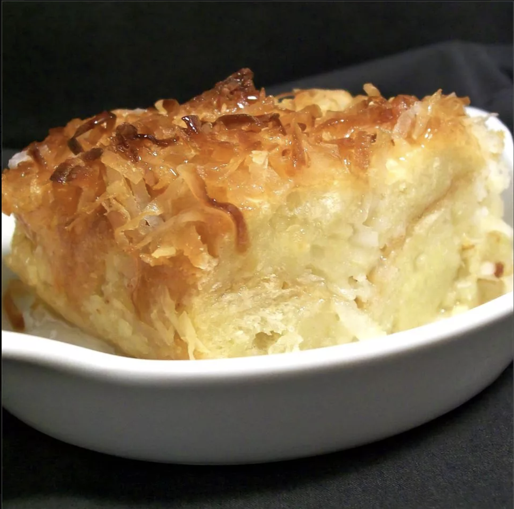

Coconut Bread Pudding

Description
The classic bread pudding is enhanced with coconut flakes and coconut milk.
Ingredients
- 2 tablespoons butter
- ⅓ cup confectioners' sugar
- 1 cup white sugar
- 4 eggs
- 1 egg yolk
- 2 (14 ounce) cans coconut milk
- 1 teaspoon ground cinnamon
- ¼ teaspoon ground nutmeg
- ¼ teaspoon salt
- 2 tablespoons coconut extract
- 1 ½ cups flaked coconut, divided
- ½ cup fresh coconut
- 1 (1 pound) loaf French bread, cut into 1 inch cubes
Steps
- Preheat oven to 325 degrees F (165 degrees C). Grease a 9x13 inch baking dish with butter, and dust with confectioners' sugar.
- In a large bowl, combine sugar, eggs, egg yolk, coconut milk, cinnamon, nutmeg, salt and coconut extract. Mix until smooth. Stir in 1 cup of flaked coconut, and 1/2 cup fresh coconut. Fold in bread cubes until evenly coated. Pour into prepared baking dish. Set aside for 30 minutes.
- Bake on a cookie sheet in preheated oven for 25 minutes. Sprinkle top with remaining 1/2 cup flaked coconut. Continue baking for 25 to 30 minutes, or until center springs back when lightly tapped.